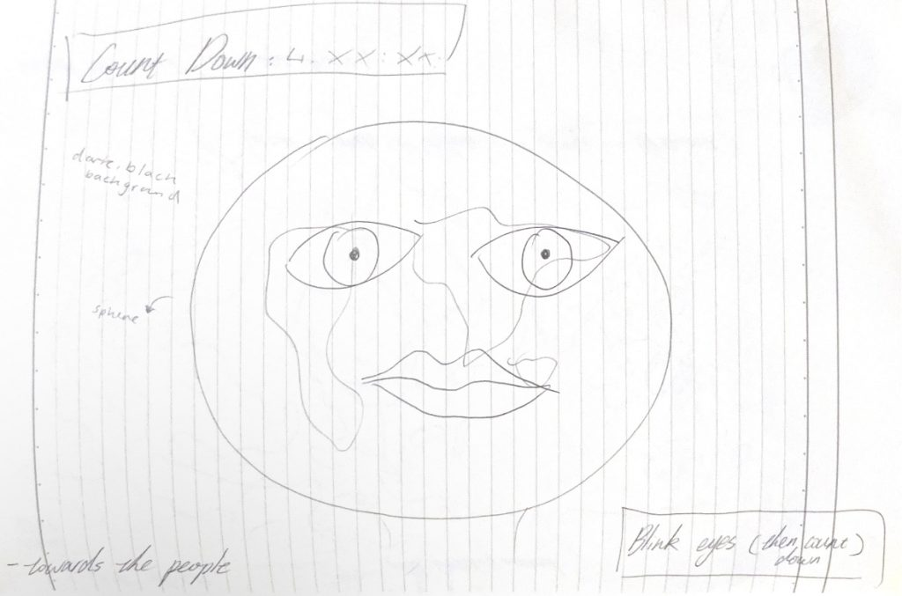
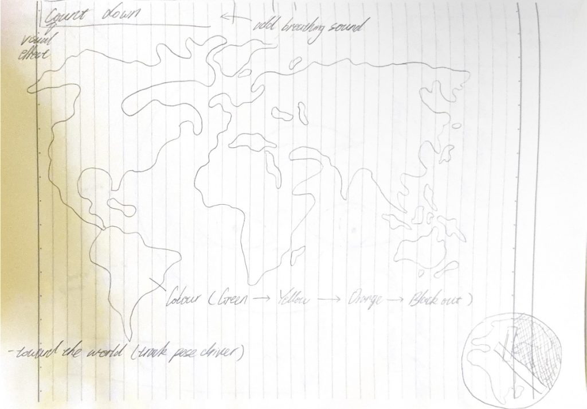

The aim of our project is to create an augmented reality (AR) experience about the Climate Clock.Through this experience, we hope to draw people’s attention to the urgency of climate change and encourage users to think about their roles in shaping the future of the Earth. This interactive design combines filters, sounds, and real-time user input to create a profound and memorable experience. When users start the experience, the camera will capture their faces and automatically apply a dynamic Earth filter that covers their faces. The countdown begins at a normal speed, and the colour of the filter will gradually change over time, symbolising the deterioration of the Earth’s environment. When users blink, the system will detect this action and the speed of the countdown will then accelerate, simulating the sense of urgency as time quickly passes due to unconscious behaviours. Meanwhile, the background colour gradually changes from bright to dark, enhancing the visual impact, and the breathing sound also gradually becomes faster, creating an atmosphere of acceleration and tension. When the countdown approaches zero, the filter turns deep red, and the breathing sound reaches its peak. Finally, as the countdown reaches zero, the screen instantly turns black, and all sounds stop.

The key elements of the project
1. Countdown mechanism: The timer initially runs at a normal speed, but as the user interacts (by blinking), the timing speed increases.
2. Earth filter: A dynamic filter is applied to the user’s face, and its colour changes according to the state of the countdown.
3. Breathing sound feedback: Synchronized breathing sounds intensify gradually as the countdown progresses, enhancing the sense of immersion.
4. Impactful ending: When the countdown reaches zero, the screen turns black, symbolizing the serious consequences of inaction.

Interaction and User Experience Design
Designing this project has made me realize the importance of creating a feedback connection between users and the system. For example, the interactive mechanism where users blink to accelerate the countdown demonstrates how subtle and natural user actions can influence the experience. This design makes users feel directly responsible for the outcome, strengthening the theme of the urgency of climate action.
Meanwhile, I also learned how to balance the sense of engagement and ease of use:
• The use of colour changes and auditory cues (breathing sounds) provides clear feedback to users, making the interface intuitive and easy to understand.
• Adding interactions (such as blinking and breathing synchronisation) deepens the experience and makes it more immersive.
Application of Augmented Reality Technology
In the process of implementing the Earth filter, I learned how AR technology adapts to the user’s face and how to convey meaning through visual elements. For example:
• The colour change of the filter represents the health status of the Earth, creating an emotional connection.
• This made me realise that AR technology can be used not only for entertainment but also to convey serious and meaningful messages.
Emotional Impact of Sound Design
The breathing sound is a key element in the entire design. As the countdown progresses, the accelerated breathing rhythm simulates the increasing sense of anxiety, making the experience more realistic. This made me aware that sound design can effectively evoke emotions and complement visual elements.
Symbolic Meaning in Interaction
The screen turning black when the countdown reaches zero is a powerful metaphor, symbolising irreversible consequences and highlighting the ultimate meaning of the theme. This taught me how to leave a deep impression on users through symbolic design and an impactful ending.
Conclusion
By designing a mechanism where user actions (such as blinking) directly affect the countdown, we have created a dialogue between users and the system. This interaction not only enhances the sense of participation but also reinforces the core message of the project: every tiny action has a significant impact on climate change. The combination of visual, auditory, and symbolic elements also helps to evoke a sense of urgency and responsibility. This has made me deeply understand that a successful design must resonate on an emotional level. By creating an experience that closely links individual actions with global consequences, we hope to inspire users to think and take action to help meet the challenges of climate change.